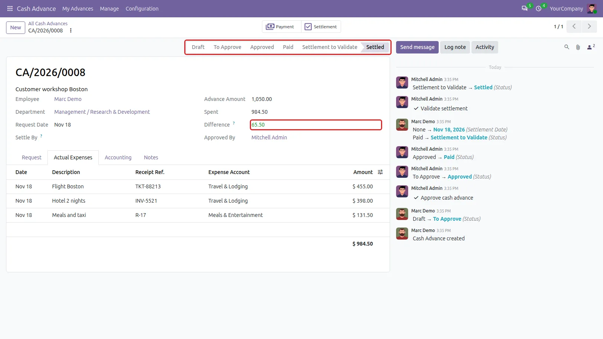
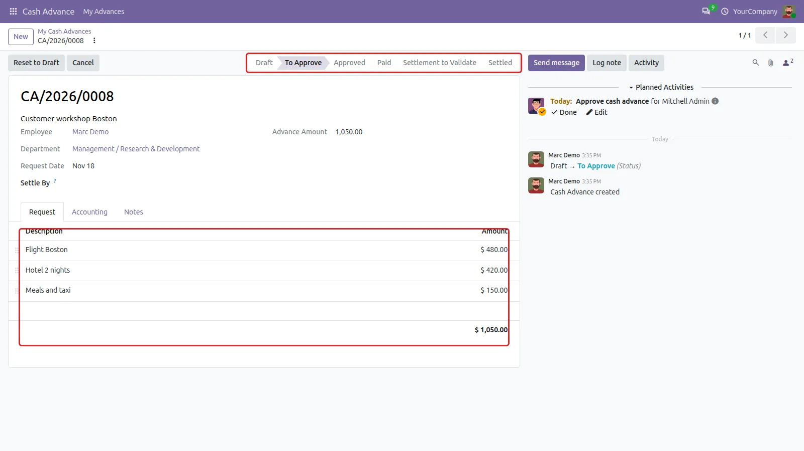
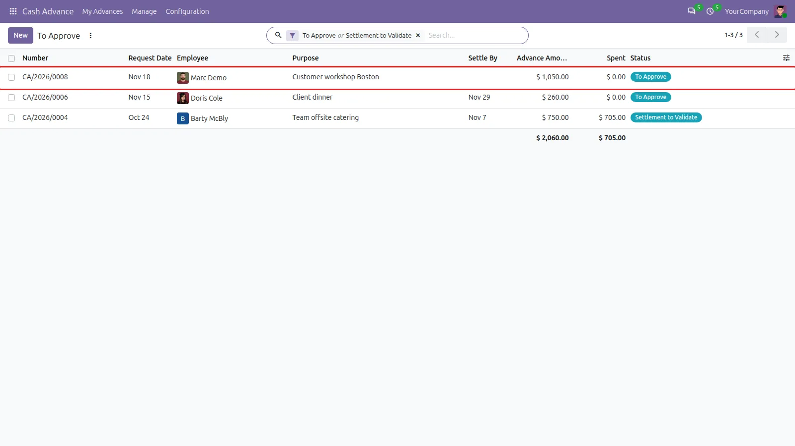
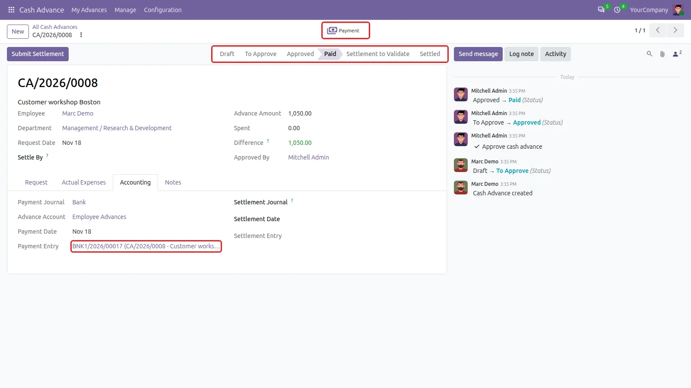
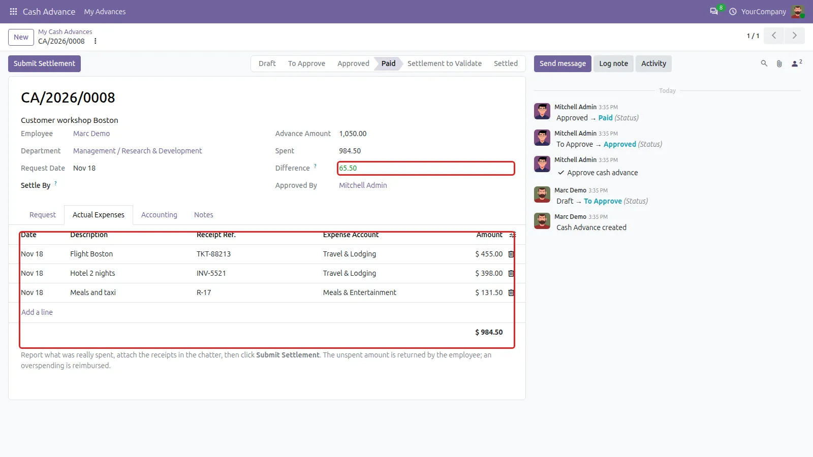
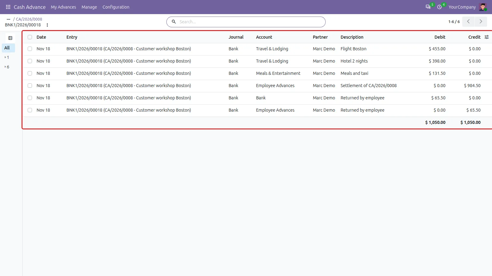
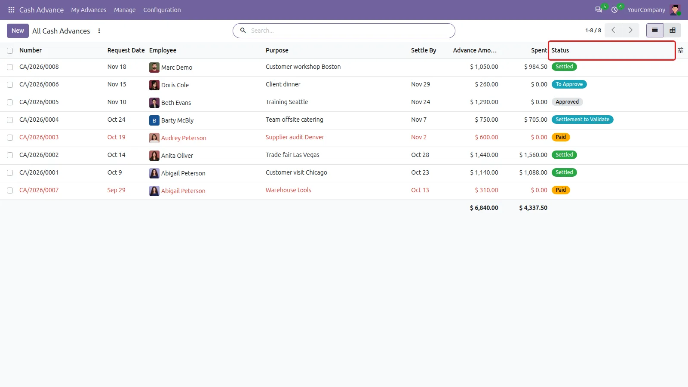
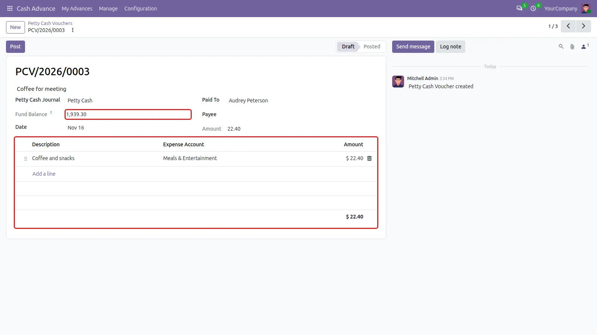
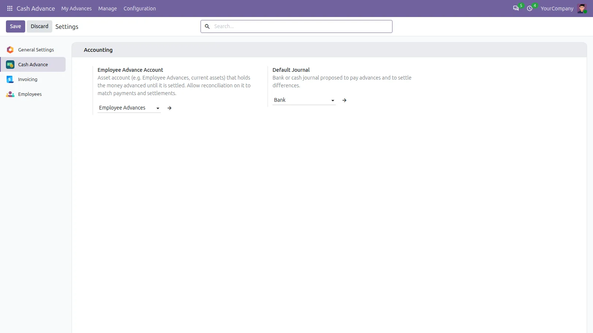
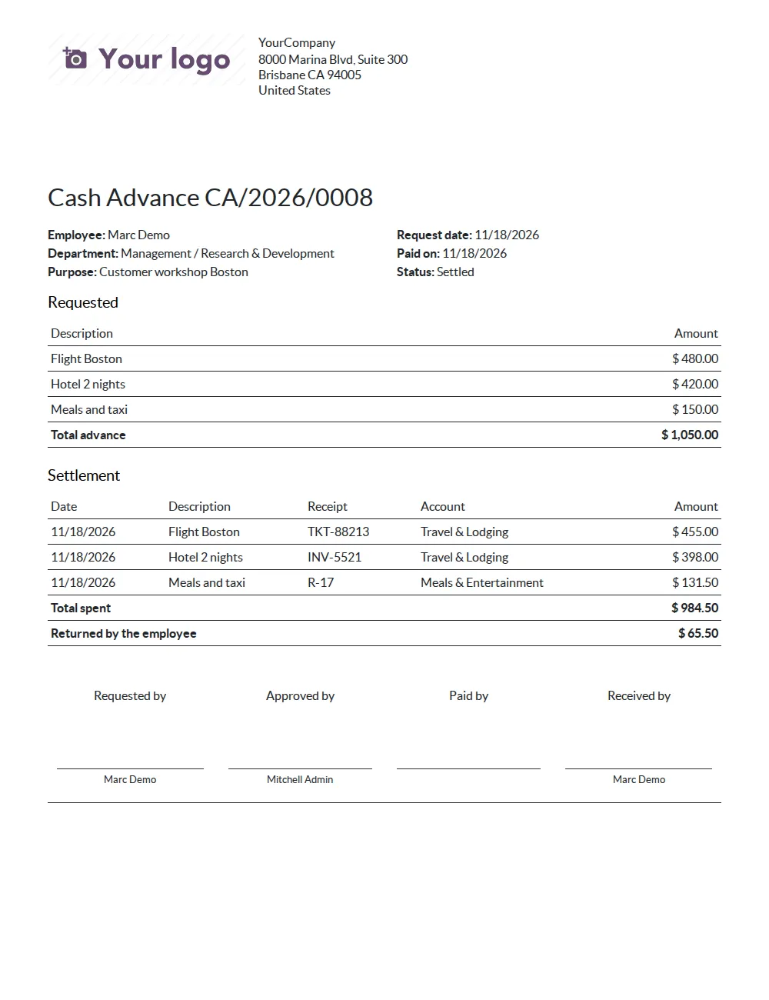

Cash Advance and Petty Cash - Employee Advance Settlement
Employee cash advance with approval, payment and settlement (return or reimburse the difference), plus petty cash vouchers, with journal entries posted.
- Price
- $39
- Odoo versions
- 17.0
- 18.0
- 19.0
- 20.0
- Technical name
tamadoo_cash_advance- License
- OPL-1

Text and screenshots below are from the Odoo 20.0 version of this module.
Request, approve, pay and settle the money advanced to employees, with the journal entries posted for you. The unspent money comes back, overspending is reimbursed, and the advance account is always clean.

Why teams use it
Approval flow
Employees request, managers approve or refuse with a reason. Activities tell approvers what waits for them.
Correct accounting
Payment and settlement entries are posted automatically and the employee advance account is reconciled.
Return or reimburse
Unspent money is returned by the employee, overspending is reimbursed: the difference is computed and posted for you.
Overdue settlements
A settle-by date per advance; overdue advances stand out in red and have their own filter.
Analytic and receipts
Expense accounts, analytic distribution and receipt references per line; attach receipts in the chatter.
Petty cash too
Petty cash vouchers posted from your cash journal with the fund balance.
Step by step
1. The employee requests an advance
Purpose, amounts and the date by which the expenses must be reported. Submitting schedules an approval activity for the employee's manager.

2. Managers see what waits for them
Requests to approve and settlements to validate in one list.

3. Approve and pay
Paying posts the journal entry: the employee advance account is debited, the bank or cash journal credited.

4. The employee reports the actual expenses
Date, description, receipt reference, expense account and analytic distribution per line. The difference with the advance is computed live.

5. Validate the settlement
The expenses are posted against the advance and the difference is returned or reimbursed through the settlement journal. The advance is closed.

The settlement entry
Expenses, the cleared advance and the returned cash in one balanced entry; the advance lines are reconciled.

Follow every advance
Overdue settlements in red, totals advanced and spent, filters and a pivot view by employee and status.

Petty cash vouchers
Small expenses paid from the petty cash journal, with the fund balance on the voucher.

Settings
The employee advance account and the default bank or cash journal.

Printable voucher
Request, settlement and the difference, with signature boxes for the requester, approver, cashier and receiver.

Set up in 2 minutes
- Create an asset account Employee Advances (current assets, allow reconciliation).
- Cash Advance → Configuration → Settings: choose that account and the default bank or cash journal.
- Give approvers the Cash Advance / Manager role. Every employee with a user can request advances.
Requirements: Odoo 20.0, depends on account (Invoicing) and hr (Employees). Amounts are in the company currency.
Get Cash Advance and Petty Cash
Questions before buying? Write to tama.odoo@gmail.com.